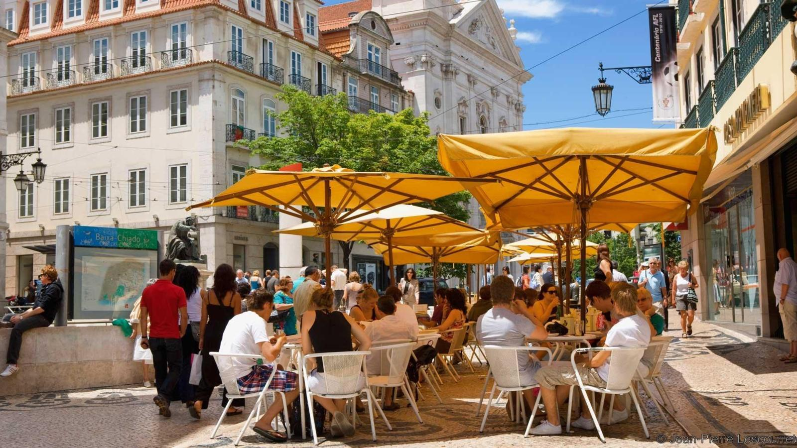

TripAdvisory
Welcome To Lisbon, Portugal
Neighborhoods of Lisbon
Bairro Alto, Chiado At Lisbonas heart is literary Chiado (pictured), harbouring pavement cafes, chichi boutiques and the architectural enigma of Convento do Carmo. Its hyperactive neighbour, Bairro Alto, is an electric mix of vintage fashion, appetising bistros and all-night bars. Its micro zones include Cais do SodrA for sweaty gigs, gay-friendly PrAncipe Real and boho hangout Santa Catarina.
Baixa and Rossio Edging east you reach gridlike Baixa, MarquAs de Pombalâs 18th-century, post-earthquake brainchild. PraAsa do ComArcio evokes the heyday of Portuguese royalty with its grand arcades, pictured here, while pedestrianized Rua Augusta throngs with buskers and shoppers.
Alfama, Castelo and GraÃa Nudging Baixa is working-class Alfama, a labyrinth of winding alleys and sun-dappled squares. Vintage trams rattle, fish sizzles, laundry flaps and neighbours gabble to the backbeat of traditional faro. Its key sights are fortress-like SÃ cathedral and hilltop Castelo de Sao Jorge.
BelAcm A short tram ride west of the centre takes you to BelAcm, an Age of Discovery time capsule where Manueline treasures like Mosteiro dos JerAnimos, pictured here, demand exploration.